Chapter 5 annoRect
This function can be used to add some rects annotations beside the plot or in plot.
Simple annotation:
library(jjAnno)
library(ggplot2)
# default plot
annoRect(object = p,
annoPos = 'top',
xPosition = c(1:10))## [1] "This palatte have 20 colors!"
## [1] "This palatte have 20 colors!"
## [1] "This palatte have 20 colors!"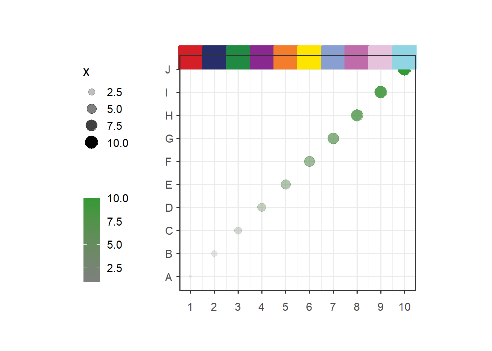
You can adjust the yPosition:
# adjust yPosition
annoRect(object = p,
annoPos = 'top',
xPosition = c(1:10),
yPosition = c(11,11.5))## [1] "This palatte have 20 colors!"
## [1] "This palatte have 20 colors!"
## [1] "This palatte have 20 colors!"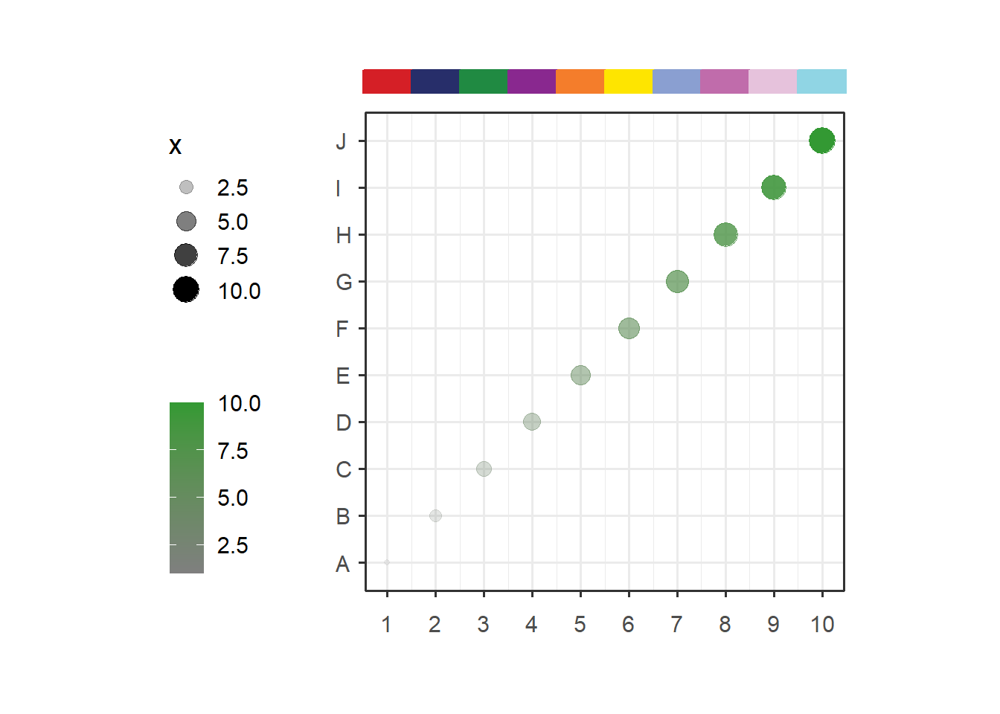
Change color alpha:
# change color alpha
annoRect(object = p,
annoPos = 'top',
xPosition = c(1:10),
yPosition = c(11,11.5),
alpha = 0.5)## [1] "This palatte have 20 colors!"
## [1] "This palatte have 20 colors!"
## [1] "This palatte have 20 colors!"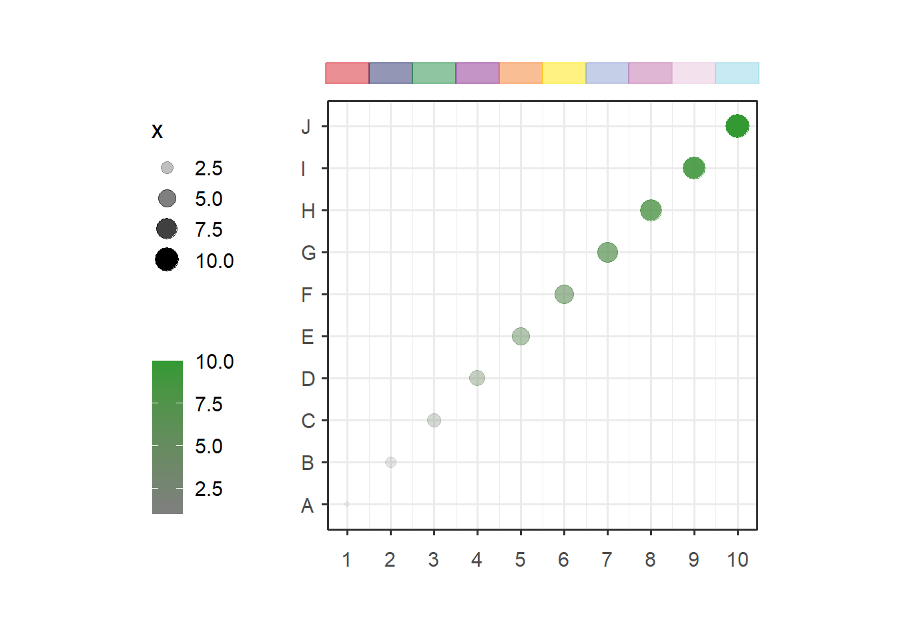
Set rect width:
# adjust rectWidth
annoRect(object = p,
annoPos = 'top',
xPosition = c(1:10),
yPosition = c(11,11.5),
rectWidth = 0.9)## [1] "This palatte have 20 colors!"
## [1] "This palatte have 20 colors!"
## [1] "This palatte have 20 colors!"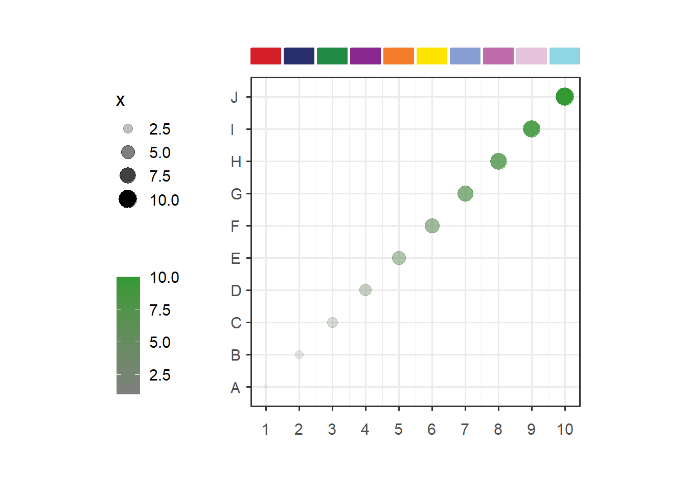
Change rect color and fill:
# change rect color and fill
annoRect(object = p,
annoPos = 'top',
xPosition = c(1:10),
yPosition = c(11,11.5),
rectWidth = 0.9,
pCol = rep('black',10),
pFill = rep('grey80',10))## [1] "This palatte have 20 colors!"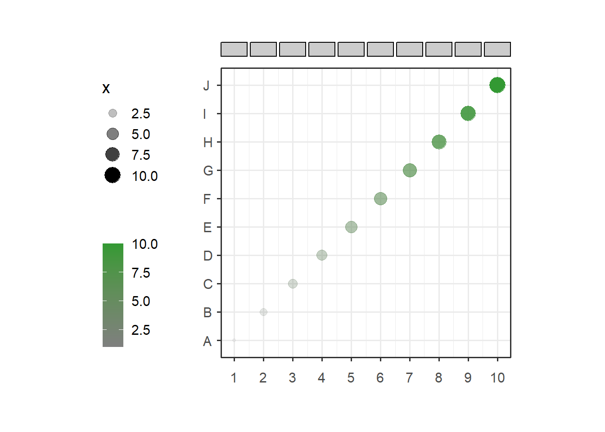
Change rect lty and lwd:
# change rect lty and lwd
annoRect(object = p,
annoPos = 'top',
xPosition = c(1:10),
yPosition = c(11,11.5),
rectWidth = 0.9,
pCol = rep('black',10),
pFill = rep('grey80',10),
lty = 'dashed',
lwd = 2)## [1] "This palatte have 20 colors!"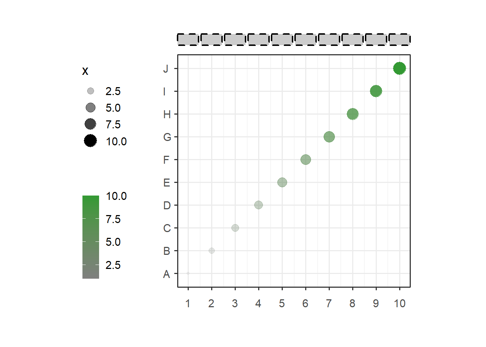
Add only partial annotations:
# only add some annotations
annoRect(object = p,
annoPos = 'top',
xPosition = c(1,3,5,7,9),
yPosition = c(11,11.5))## [1] "This palatte have 20 colors!"
## [1] "This palatte have 20 colors!"
## [1] "This palatte have 20 colors!"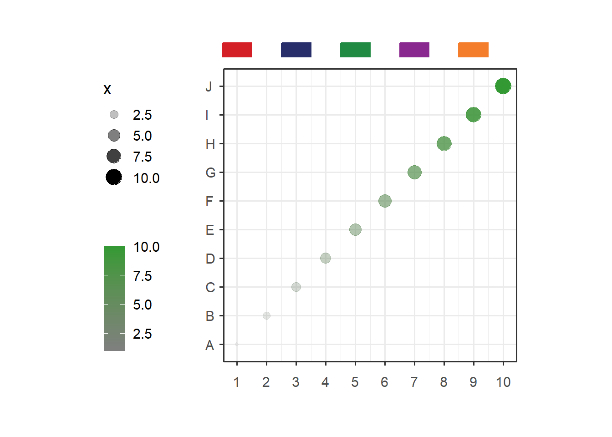
Supply your own coordinates to annotate:
# supply your own coordinates to annotate
annoRect(object = p,
annoPos = 'top',
annoManual = T,
xPosition = list(c(1,6),
c(5,10)),
yPosition = c(11,11.5),
pCol = rep('black',2),
lty = 'solid',
lwd = 2)## [1] "This palatte have 20 colors!"
## [1] "This palatte have 20 colors!"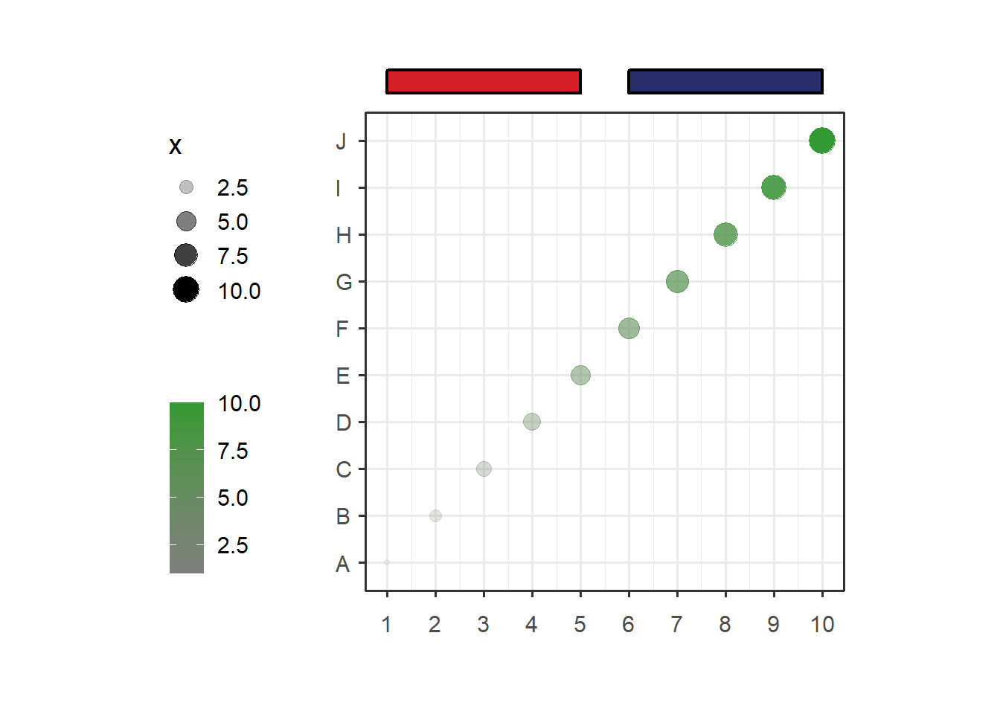
You can supply multiple yPosition in list:
# multiple yPosition
annoRect(object = p,
annoPos = 'top',
annoManual = T,
xPosition = list(c(1,6),
c(5,10)),
yPosition = list(c(11,11.5),
c(11.5,12)),
pCol = rep('black',2),
lty = 'solid',
lwd = 2)## [1] "This palatte have 20 colors!"
## [1] "This palatte have 20 colors!"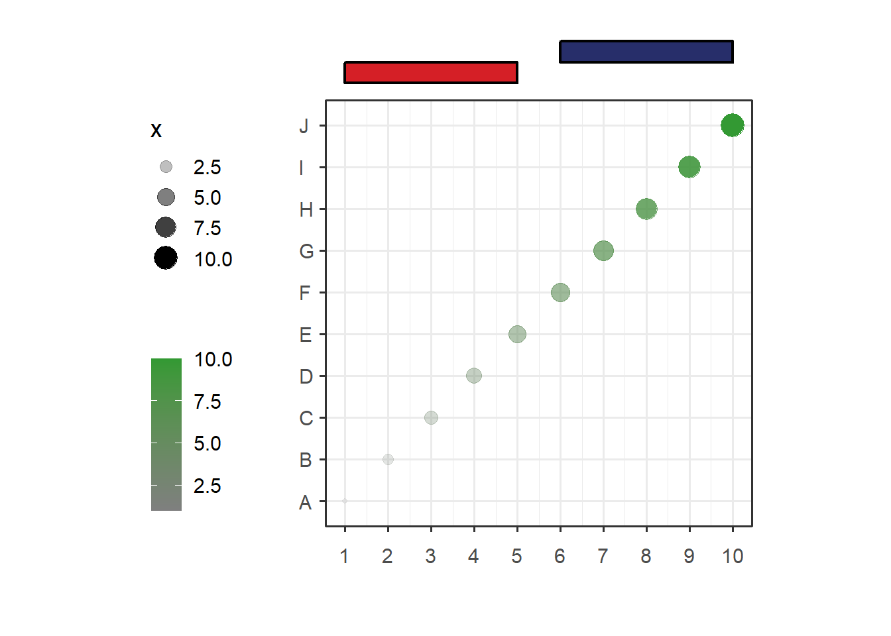
Add to right:
# add to right
annoRect(object = p,
annoPos = 'right',
yPosition = c(1:10),
xPosition = c(10.5,11),
rectWidth = 0.8)## [1] "This palatte have 20 colors!"
## [1] "This palatte have 20 colors!"
## [1] "This palatte have 20 colors!"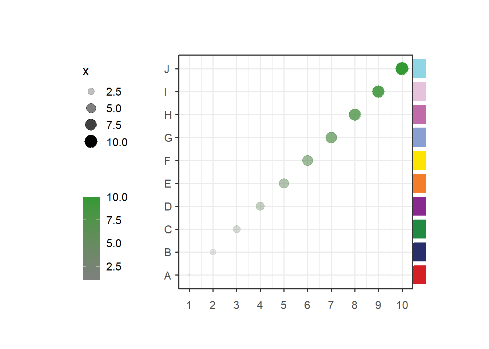
Add multiple annotations:
# add multiple
p1 <- annoRect(object = p,
annoPos = 'top',
xPosition = c(1:10),
yPosition = c(11,11.5),
rectWidth = 0.9,
pCol = rep('black',10),
pFill = rep('grey80',10),
lty = 'dashed',
lwd = 2)## [1] "This palatte have 20 colors!"# add second annotation
p2 <- annoRect(object = p1,
annoPos = 'right',
yPosition = c(1:10),
xPosition = c(10.5,11),
rectWidth = 0.8)## [1] "This palatte have 20 colors!"
## [1] "This palatte have 20 colors!"
## [1] "This palatte have 20 colors!"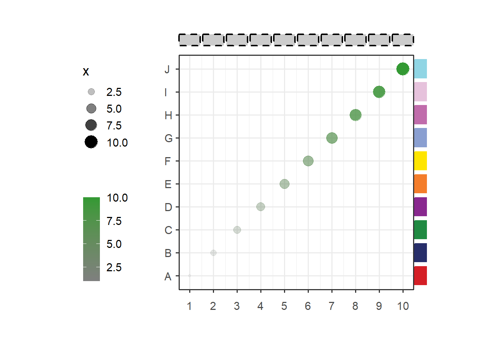
# add third annotation
annoRect(object = p2,
annoPos = 'top',
xPosition = c(1:10),
yPosition = c(11.8,12.3),
rectWidth = 0.8)## [1] "This palatte have 20 colors!"
## [1] "This palatte have 20 colors!"
## [1] "This palatte have 20 colors!"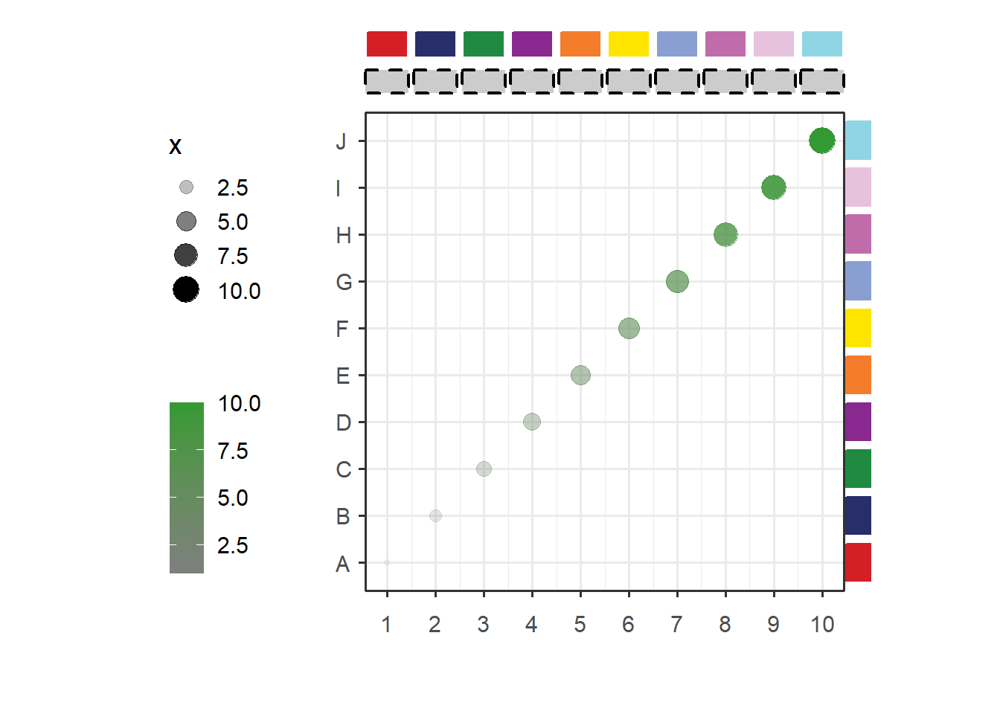
5.1 add GO plot with annotation
Load test data:
data(pgo)
pgoHere is the plot code:
# Plot
pgo <-
ggplot(df1,aes(x = log10PValue,y = Term)) +
geom_point(aes(size = log10PValue,
color = log10PValue)) +
scale_color_gradient2(low = 'blue',mid = 'green',high = 'red',
name = '',midpoint = 2.1) +
scale_y_discrete(position = 'right') +
scale_x_continuous(breaks = seq(0,2.8,0.4),limits = c(0,2.8)) +
theme_grey(base_size = 14) +
theme(legend.position = 'left',
plot.margin = margin(t = 1,r = 1,b = 1,l = 1,unit = 'cm'),
aspect.ratio = 2.5
) +
coord_cartesian(clip = 'off') +
ylab('')5.2 annotate
Add 15 rects:
# another example annotation GO terms
annoRect(object = pgo,
annoPos = 'right',
yPosition = c(1:15),
pCol = rep('transparent',15),
pFill = rep(c('#F5F0BB','#C4DFAA','#90C8AC'),each = 5),
xPosition = c(3,10),
rectWidth = 1)Supply own coordinates to add(3 rects):
# annotate mannually
annoRect(object = pgo,
annoPos = 'right',
annoManual = T,
xPosition = c(3,10),
yPosition = list(c(0.5,5.5,10.5),
c(5.5,10.5,15.5)),
pCol = rep('black',3),
pFill = c('#F5F0BB','#C4DFAA','#90C8AC'))